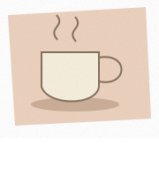
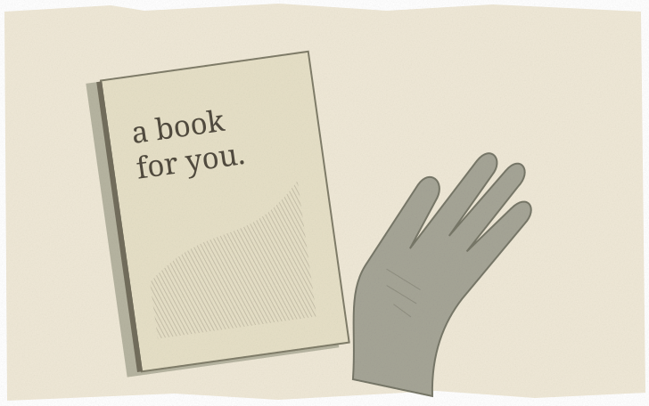
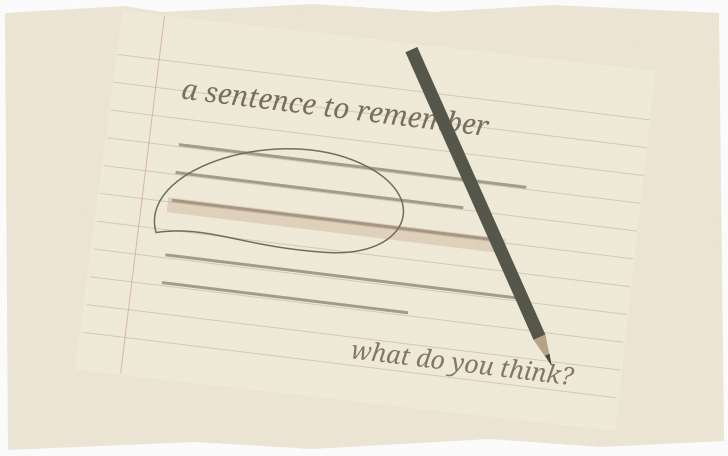
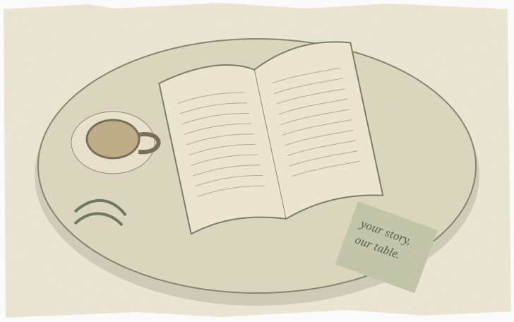
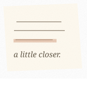
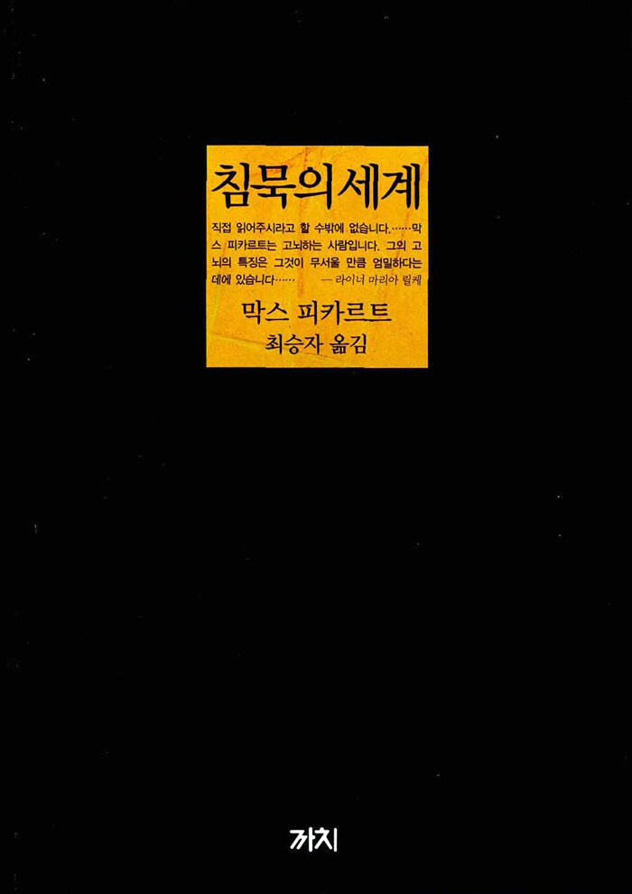
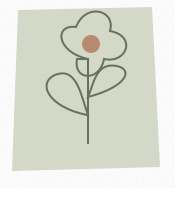
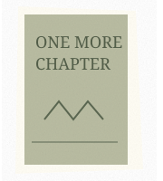
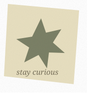

한 권의 책에서,
우리의 대화까지.
처음 책을 고르는 순간부터, 다음 만남을 기다리기까지.
A LITTLE STORY ABOUT READING

혼자 읽은 문장이,
우리의 이야기가 돼요.




0:00 / 0:20
함께 읽는 자리를
만드는 사람들
진행자는 정답을 알려주는 사람이 아니에요.
첫 인사를 건네고, 좋은 질문을 준비하고,
모두의 이야기가 편안히 머물 자리를 만들어요.


서로의 속도를
존중하는 마음다섯 걸음이면, 같은 테이블에.
01책장에서 책을 골라요
가운데에는 이번 모임의 책이, 옆에는 함께 읽어온 책이 있어요. 책을 선택하면 독서 가이드로 이어져요.
책장에서 선택하기 01책장 → 도서 선택 → 독서 가이드

02담당 범위를 확인해요
멤버별 읽기 정리에서 이름을 선택해요. 그 사람의 담당 범위와 공개된 정리만 따로 확인할 수 있어요.
멤버별 정리 보기 02서동진 · 안건국 · 유지홍 · 김승철 · 박진규 · 안사무엘
03자료를 읽고 정리해요
장별 내용과 질문을 읽고 자신의 생각을 준비해요. 개인 밑줄·노트는 내 브라우저에, 공개 저장한 발제는 공통 기록에 보관돼요.
일곱 장 상세 읽기 04모임 정보를 함께 확인해요
확정한 날짜와 시간, 장소, 책과 각자의 담당을 전체 요약에서 확인해요. 공개 저장한 기록은 모든 방문자에게 함께 보여요.
확정 모임 안내 05다음 책을 함께 정해요
다음 모임의 일정과 책 링크를 입력하고 담당을 나눠요. 책별 작성자 비밀번호를 정한 뒤 공개 저장하면 책장에도 반영돼요.
다음 모임 정하기 05다음 책 선택 → 담당 정하기 → 공개 저장
나와 닮은 책, 나와 다른 시선.
취향이 같아 반갑고, 생각이 달라 더 재미있어요.
지금의 당신에게 말을 거는 모임을 만나보세요.
좋은 대화를 위해,
하지 않는 세 가지.
01 /감상에 순위를 매기지 않아요.
다르게 읽은 마음을 환영해요. 누구의 해석도 다른 사람의 정답이 될 필요는 없어요.
02 /완독을 숙제로 만들지 않아요.
다 읽지 못한 날에도 괜찮아요. 머물렀던 페이지에서 대화를 시작할 수 있어요.
03 /한 사람의 목소리로 채우지 않아요.
말할 여백과 들을 시간을 함께 나눠요. 조용히 듣고 싶은 마음도 존중해요.


